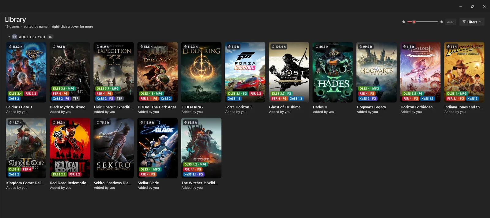
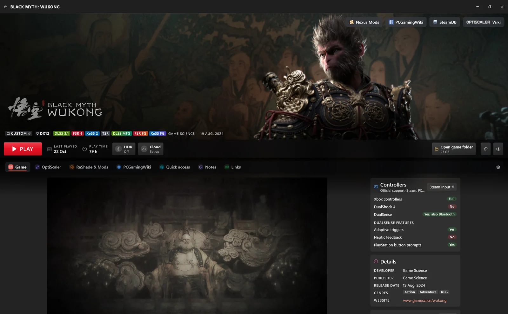
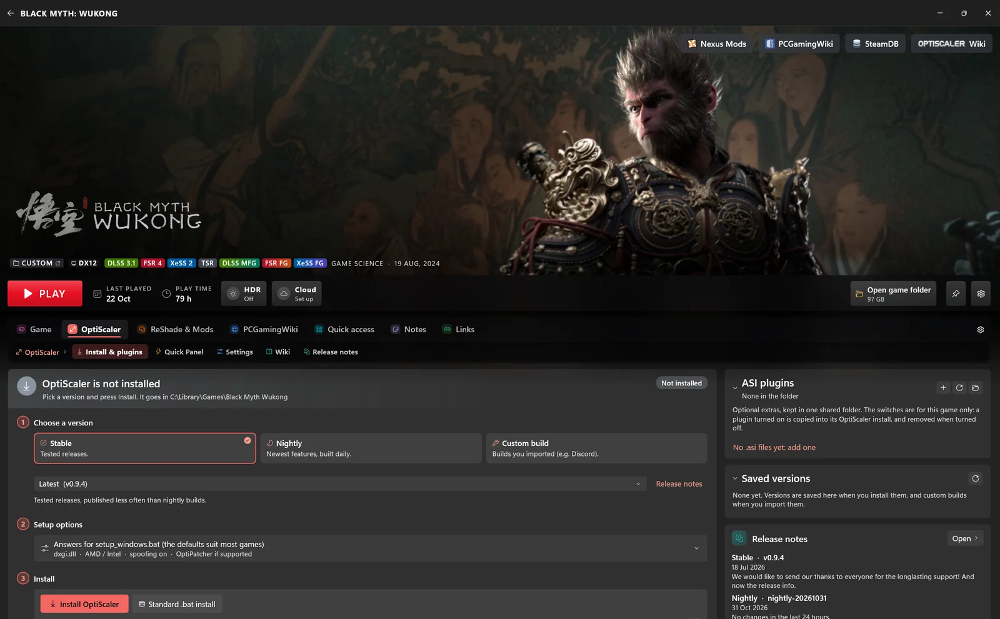
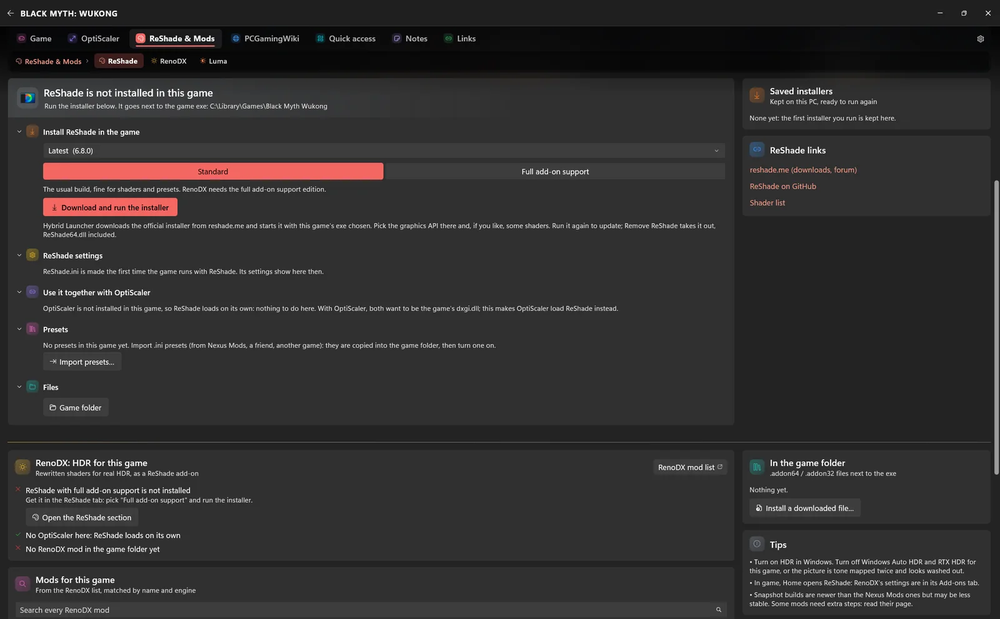
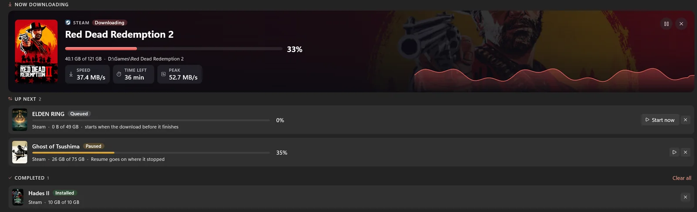
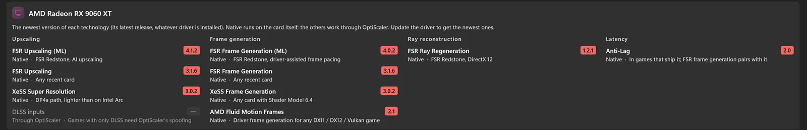
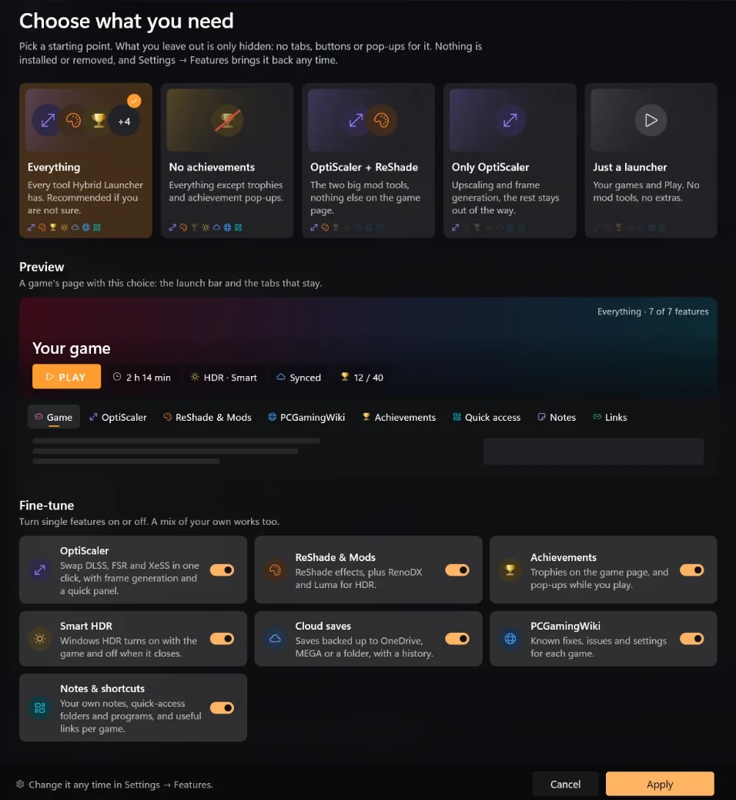

One library. Steam, Epic Games, GOG and Xbox / Game Pass, plus any exe or folder you add. Covers, play time, pins and filters.
One library for Steam, Epic, GOG and Xbox games, and the mods that make them run and look better.
Portable zip, no installer. All releases

The best results come from external programs and mods, each with its own installer, its own folders and its own rules: many paths to remember, create and manage, spread over half a dozen launchers.
Hybrid Launcher brings some of the main mods and the usual launcher features together, and offers them as one alternative.
Every picture below is the real app, running on sample games.

One library. Steam, Epic Games, GOG and Xbox / Game Pass, plus any exe or folder you add. Covers, play time, pins and filters.

OptiScaler, made easy. A quick panel for the settings you change most, configuration profiles, and new versions fetched from GitHub by themselves. Custom builds are supported too, and every version is saved, listed and one click away.

ReShade, RenoDX, Luma. ReShade's own installers, RenoDX HDR mods and Luma mods matched to the game when one exists.
Smart HDR. Windows HDR switches on when the game starts and off when it closes.
Cloud saves. OneDrive, MEGA, a folder of your choice, or several at once, with history and conflict handling.

Direct downloads. Sign in to Steam, Epic or GOG to download, pause, resume and update your games from one place.
Custom achievements. Rarity, a platinum trophy at 100 %, and a pop-up you design: position, size, colour, sound.
Quick access. Your own shortcuts per game: folders, tools and config files, one click from the game page.

My PC. Your hardware at a glance, displays, Windows' gaming switches and the upscaler versions your driver provides.
Get the latest HybridLauncher-…-win-x64.zip and extract it anywhere you can write, for example C:\Games\Hybrid Launcher.
Start HybridLauncher.exe. It finds the games of your launchers by itself, and a short tour shows you around.
Open its page, choose OptiScaler or a mod, and press Install. Remove it any time and the folder goes back as it was.
Hybrid Launcher adapts to how you play. At the first start you choose what you need: a starting point, a live preview of a game's page, a switch per feature. What you leave out is only hidden, and Settings → Features brings it back any time.

Yes. It is free and open source software under the GNU GPL v3: use it, read the code, build it, change it and fork it. Forks and unofficial builds just need to credit this project.
Only the game folders you ask it to change, when you install a mod. The files a mod replaces can be backed up first (the default), so removing it puts the folder back as it was. Your settings live in %LOCALAPPDATA%\HybridLauncher.
No. Without accounts it reads the games your launchers installed on this PC. Signing in to Steam, Epic or GOG only adds direct downloads and your full owned library.
They can, in games and services that forbid them. Check the rules of every game before you mod it, and never use mods in online or competitive games that do not allow them.
A few seconds after it starts it checks for a new version and asks once before updating.
Because I am not a designer (if you are one and would like to contribute, feel free to get in touch at lorenzoillumino@gmail.com or as LorenzoKy on Discord!). Pizza is my favourite food, and the ultimate hybrid. Also, nobody has ever been unhappy to see a slice of pizza. 🍕
Support is really appreciated: it encourages me to keep developing Hybrid Launcher and helps cover its costs. But be warned: for now, updates come at random times and are not guaranteed.
Thank you.
Hybrid Launcher is a personal passion project. The time I have for it is very limited, so updates come at random times and are not guaranteed. What helps it keep going:
Please respect this choice. Reports and requests are only considered when the description is detailed, understandable and makes sense, with logs and screenshots. Anything else will be ignored, permanently.
The quickest way: in the app, Settings → About → Report on GitHub. It opens the bug form with the version, your system and the log already filled in, with your user name, PC name and e-mail addresses taken out first. Otherwise the issue templates tell you exactly what to include; logs are in %LOCALAPPDATA%\HybridLauncher\logs, one file per session of the app.
Hybrid Launcher downloads, runs or links to software and services made by others: OptiScaler and OptiPatcher (the OptiScaler team), ReShade (crosire), RenoDX, Luma, PCGamingWiki, HowLongToBeat, Nexus Mods, Steam, Epic Games, GOG, Xbox, OneDrive and MEGA. None of them is affiliated with me or with this project, and none of them endorses it. Each belongs to its owners, under its own license and terms. All trademarks belong to their owners, including the names and covers of the games shown in the pictures, which appear only as examples.
Hybrid Launcher is provided AS IS, without warranty of any kind. You use it at your own risk.
If you do not agree with all of the above, do not use Hybrid Launcher.